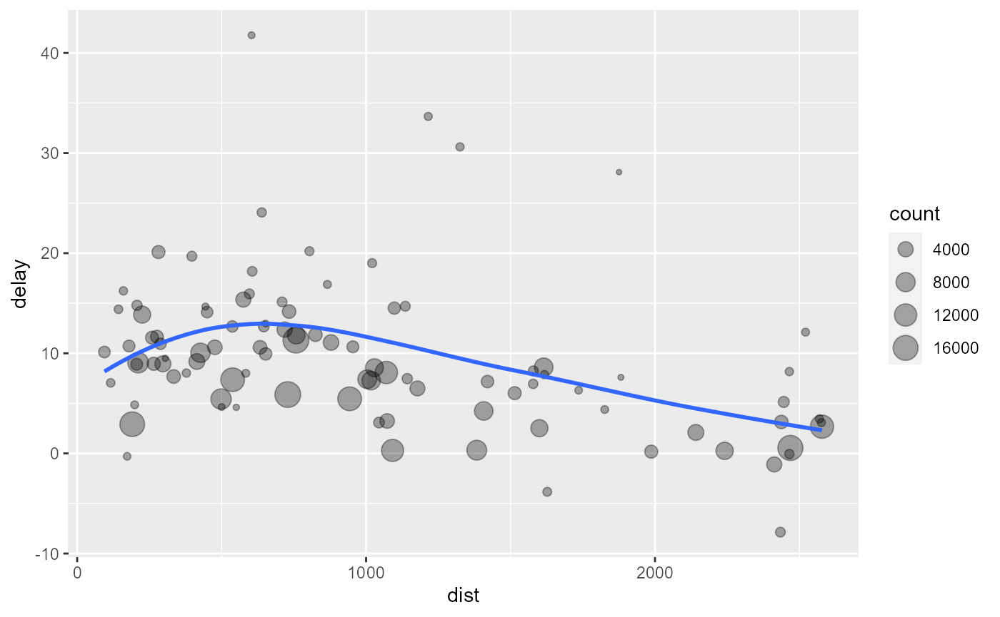

Data_Manipulation.Rmdfilter()
arrange()
select()
mutate()
summrise()
group_by()
注意
data.frame，后续参数描述了你对数据的操作data.frame
filter()
filter()可以根据观测值来筛选行（即Excel中的筛选）。其中，第一个参数是你要筛选的数据框的名字，从第二个参数开始的后续参数描述了你的筛选条件。例如，我们可以使用如下命令筛选1月1号的飞机：
filter(flights, month == 1, day == 1)
#> # A tibble: 842 x 19
#> year month day dep_time sched_dep_time dep_delay arr_time sched_arr_time
#> <int> <int> <int> <int> <int> <dbl> <int> <int>
#> 1 2013 1 1 517 515 2 830 819
#> 2 2013 1 1 533 529 4 850 830
#> 3 2013 1 1 542 540 2 923 850
#> 4 2013 1 1 544 545 -1 1004 1022
#> 5 2013 1 1 554 600 -6 812 837
#> 6 2013 1 1 554 558 -4 740 728
#> 7 2013 1 1 555 600 -5 913 854
#> 8 2013 1 1 557 600 -3 709 723
#> 9 2013 1 1 557 600 -3 838 846
#> 10 2013 1 1 558 600 -2 753 745
#> # ... with 832 more rows, and 11 more variables: arr_delay <dbl>,
#> # carrier <chr>, flight <int>, tailnum <chr>, origin <chr>, dest <chr>,
#> # air_time <dbl>, distance <dbl>, hour <dbl>, minute <dbl>, time_hour <dttm>filter()不会改变你的原始数据，如果你想保存你的处理结果，可以将上述表达式赋值给一个新的变量：
jan1 <- filter(flights, month == 1, day == 1)
如果你又想保存成新的变量，又想输出你的处理结果到屏幕上，你可以用括号将上述表达式括起来：
(jan1 <- filter(flights, month == 1, day == 1))
filter()，应该学习使用比较运算==, >=, !=, <=, <, >, all.equal()
&, |
如果我们要筛选出11月或者12月的航班：
filter(flights, month == 11 | month == 12)
#> # A tibble: 55,403 x 19
#> year month day dep_time sched_dep_time dep_delay arr_time sched_arr_time
#> <int> <int> <int> <int> <int> <dbl> <int> <int>
#> 1 2013 11 1 5 2359 6 352 345
#> 2 2013 11 1 35 2250 105 123 2356
#> 3 2013 11 1 455 500 -5 641 651
#> 4 2013 11 1 539 545 -6 856 827
#> 5 2013 11 1 542 545 -3 831 855
#> 6 2013 11 1 549 600 -11 912 923
#> 7 2013 11 1 550 600 -10 705 659
#> 8 2013 11 1 554 600 -6 659 701
#> 9 2013 11 1 554 600 -6 826 827
#> 10 2013 11 1 554 600 -6 749 751
#> # ... with 55,393 more rows, and 11 more variables: arr_delay <dbl>,
#> # carrier <chr>, flight <int>, tailnum <chr>, origin <chr>, dest <chr>,
#> # air_time <dbl>, distance <dbl>, hour <dbl>, minute <dbl>, time_hour <dttm>当然，如果你的条件比较多，可以使用一个语法糖%in%，比如上述表达式可以写成：
arrange()
arrange()的用法和filter()基本一致，但是它不做筛选，而是改变行的顺序 （即Excel中的排序）。如果你输入了多个变量名，可以认为指定了多个关键字。
arrange(flights, year, month, day)
#> # A tibble: 336,776 x 19
#> year month day dep_time sched_dep_time dep_delay arr_time sched_arr_time
#> <int> <int> <int> <int> <int> <dbl> <int> <int>
#> 1 2013 1 1 517 515 2 830 819
#> 2 2013 1 1 533 529 4 850 830
#> 3 2013 1 1 542 540 2 923 850
#> 4 2013 1 1 544 545 -1 1004 1022
#> 5 2013 1 1 554 600 -6 812 837
#> 6 2013 1 1 554 558 -4 740 728
#> 7 2013 1 1 555 600 -5 913 854
#> 8 2013 1 1 557 600 -3 709 723
#> 9 2013 1 1 557 600 -3 838 846
#> 10 2013 1 1 558 600 -2 753 745
#> # ... with 336,766 more rows, and 11 more variables: arr_delay <dbl>,
#> # carrier <chr>, flight <int>, tailnum <chr>, origin <chr>, dest <chr>,
#> # air_time <dbl>, distance <dbl>, hour <dbl>, minute <dbl>, time_hour <dttm>默认情况下，数据是按照升序排列，如果你需要进行降序排列，可以使用desc()函数：
arrange(flights, year, desc(month), day)
不管使用什么排序方式，缺失值永远排在最后！
select()
select()的作用就是将你的数据集缩小，只保留你关注的变量。你可以使用变量名进行快速的筛选。
select(flights, year, month, day)
#> # A tibble: 336,776 x 3
#> year month day
#> <int> <int> <int>
#> 1 2013 1 1
#> 2 2013 1 1
#> 3 2013 1 1
#> 4 2013 1 1
#> 5 2013 1 1
#> 6 2013 1 1
#> 7 2013 1 1
#> 8 2013 1 1
#> 9 2013 1 1
#> 10 2013 1 1
#> # ... with 336,766 more rows你也可以使用:来选择连续的列：
select(flights, year:day)
你也可以使用-来排除某些列：
select(flights, -(year:day))
select()的辅助函数starts_with("abc") 匹配abc开头的变量名字ends_with("xyz") 匹配xyz结尾的变量名字contains("ijk") 匹配包含ijk的变量名字matches("(.)\\1") 匹配含有重复字符的变量名字num_range("x", 1:3) 匹配x1、x2和x3all_of(vars) 匹配vars中包含的所有变量any_of(vars) 匹配vars中包含的任一变量where(is.numeric) 匹配所有是数值类型的变量everything() 返回你指定变量外的所有变量select(flights, time_hour, air_time, everything())
#> # A tibble: 336,776 x 19
#> time_hour air_time year month day dep_time sched_dep_time
#> <dttm> <dbl> <int> <int> <int> <int> <int>
#> 1 2013-01-01 05:00:00 227 2013 1 1 517 515
#> 2 2013-01-01 05:00:00 227 2013 1 1 533 529
#> 3 2013-01-01 05:00:00 160 2013 1 1 542 540
#> 4 2013-01-01 05:00:00 183 2013 1 1 544 545
#> 5 2013-01-01 06:00:00 116 2013 1 1 554 600
#> 6 2013-01-01 05:00:00 150 2013 1 1 554 558
#> 7 2013-01-01 06:00:00 158 2013 1 1 555 600
#> 8 2013-01-01 06:00:00 53 2013 1 1 557 600
#> 9 2013-01-01 06:00:00 140 2013 1 1 557 600
#> 10 2013-01-01 06:00:00 138 2013 1 1 558 600
#> # ... with 336,766 more rows, and 12 more variables: dep_delay <dbl>,
#> # arr_time <int>, sched_arr_time <int>, arr_delay <dbl>, carrier <chr>,
#> # flight <int>, tailnum <chr>, origin <chr>, dest <chr>, distance <dbl>,
#> # hour <dbl>, minute <dbl>使用rename来重命名
rename(flights, tail_num = tailnum)
#> # A tibble: 336,776 x 19
#> year month day dep_time sched_dep_time dep_delay arr_time sched_arr_time
#> <int> <int> <int> <int> <int> <dbl> <int> <int>
#> 1 2013 1 1 517 515 2 830 819
#> 2 2013 1 1 533 529 4 850 830
#> 3 2013 1 1 542 540 2 923 850
#> 4 2013 1 1 544 545 -1 1004 1022
#> 5 2013 1 1 554 600 -6 812 837
#> 6 2013 1 1 554 558 -4 740 728
#> 7 2013 1 1 555 600 -5 913 854
#> 8 2013 1 1 557 600 -3 709 723
#> 9 2013 1 1 557 600 -3 838 846
#> 10 2013 1 1 558 600 -2 753 745
#> # ... with 336,766 more rows, and 11 more variables: arr_delay <dbl>,
#> # carrier <chr>, flight <int>, tail_num <chr>, origin <chr>, dest <chr>,
#> # air_time <dbl>, distance <dbl>, hour <dbl>, minute <dbl>, time_hour <dttm>mutate()
除了对现有数据进行操作，实际操作时，往往需要生成新的变量。可以使用mutate()来做
flights_sml <- select(flights, year:day, ends_with("delay"), distance, air_time ) mutate(flights_sml, gain = dep_delay - arr_delay, speed = distance / air_time * 60 )
#> # A tibble: 336,776 x 9
#> year month day dep_delay arr_delay distance air_time gain speed
#> <int> <int> <int> <dbl> <dbl> <dbl> <dbl> <dbl> <dbl>
#> 1 2013 1 1 2 11 1400 227 -9 370.
#> 2 2013 1 1 4 20 1416 227 -16 374.
#> 3 2013 1 1 2 33 1089 160 -31 408.
#> 4 2013 1 1 -1 -18 1576 183 17 517.
#> 5 2013 1 1 -6 -25 762 116 19 394.
#> 6 2013 1 1 -4 12 719 150 -16 288.
#> 7 2013 1 1 -5 19 1065 158 -24 404.
#> 8 2013 1 1 -3 -14 229 53 11 259.
#> 9 2013 1 1 -3 -8 944 140 5 405.
#> 10 2013 1 1 -2 8 733 138 -10 319.
#> # ... with 336,766 more rowsmutate()生成的变量永远在最后！
你可以在mutate()中直接使用你刚创建的变量：
mutate(flights_sml, gain = dep_delay - arr_delay, hours = air_time / 60, gain_per_hour = gain / hours )
#> # A tibble: 336,776 x 10
#> year month day dep_delay arr_delay distance air_time gain hours
#> <int> <int> <int> <dbl> <dbl> <dbl> <dbl> <dbl> <dbl>
#> 1 2013 1 1 2 11 1400 227 -9 3.78
#> 2 2013 1 1 4 20 1416 227 -16 3.78
#> 3 2013 1 1 2 33 1089 160 -31 2.67
#> 4 2013 1 1 -1 -18 1576 183 17 3.05
#> 5 2013 1 1 -6 -25 762 116 19 1.93
#> 6 2013 1 1 -4 12 719 150 -16 2.5
#> 7 2013 1 1 -5 19 1065 158 -24 2.63
#> 8 2013 1 1 -3 -14 229 53 11 0.883
#> 9 2013 1 1 -3 -8 944 140 5 2.33
#> 10 2013 1 1 -2 8 733 138 -10 2.3
#> # ... with 336,766 more rows, and 1 more variable: gain_per_hour <dbl>如果你只要你创建的变量，可以用transmute()，用法和mutate()相同：
transmute(flights, gain = dep_delay - arr_delay, hours = air_time / 60, gain_per_hour = gain / hours )
#> # A tibble: 336,776 x 3
#> gain hours gain_per_hour
#> <dbl> <dbl> <dbl>
#> 1 -9 3.78 -2.38
#> 2 -16 3.78 -4.23
#> 3 -31 2.67 -11.6
#> 4 17 3.05 5.57
#> 5 19 1.93 9.83
#> 6 -16 2.5 -6.4
#> 7 -24 2.63 -9.11
#> 8 11 0.883 12.5
#> 9 5 2.33 2.14
#> 10 -10 2.3 -4.35
#> # ... with 336,766 more rowssummrise()
summrise()的作用就是对现有数据集进行描述统计:
summarise(flights, delay = mean(dep_delay, na.rm = TRUE))
#> # A tibble: 1 x 1
#> delay
#> <dbl>
#> 1 12.6summrise()在单独使用的时候其实作用并不是特别大，实际操作时，往往需要和group_by()进行联用：
by_day <- group_by(flights, year, month, day) summarise(by_day, delay = mean(dep_delay, na.rm = TRUE))
#> # A tibble: 365 x 4
#> # Groups: year, month [12]
#> year month day delay
#> <int> <int> <int> <dbl>
#> 1 2013 1 1 11.5
#> 2 2013 1 2 13.9
#> 3 2013 1 3 11.0
#> 4 2013 1 4 8.95
#> 5 2013 1 5 5.73
#> 6 2013 1 6 7.15
#> 7 2013 1 7 5.42
#> 8 2013 1 8 2.55
#> 9 2013 1 9 2.28
#> 10 2013 1 10 2.84
#> # ... with 355 more rows在今后的分析中，你们会经常使用到group_by和summarise()
%>%）如果我们要分析每个地点距离和平均延误时间的关系：
by_dest <- group_by(flights, dest) delay <- summarise(by_dest, count = n(), dist = mean(distance, na.rm = TRUE), delay = mean(arr_delay, na.rm = TRUE) ) delay <- filter(delay, count > 20, dest != "HNL") ggplot(data = delay, mapping = aes(x = dist, y = delay)) + geom_point(aes(size = count), alpha = 1/3) + geom_smooth(se = FALSE)

完成上述操作，我们花了3步：
在写这些代码的时候，你往往需要想出一些中间变量，并给他们进行赋值（如by_dest和delay）。 使用管道运算符，可以大幅简化你的代码量，并且使得你的代码更加易读：
flights %>% group_by(dest) %>% summarise( count = n(), dist = mean(distance, na.rm = TRUE), delay = mean(arr_delay, na.rm = TRUE) ) %>% filter(count > 20, dest != "HNL") %>% ggplot(mapping = aes(x = dist, y = delay)) + geom_point(aes(size = count), alpha = 1/3) + geom_smooth(se = FALSE)
summarise()中使用函数很多函数可以配合summarise()使用，如dplyr自带的count(), n()等等。 R本身也自带了很多有用的函数，与summarise()配合使用可以发挥很好的作用：
ungroup()
如果你不在需要分组，可以使用ungroup()进行还原：
daily <- group_by(flights, year, month, day) daily %>% ungroup() %>% # no longer grouped by date summarise(flights = n())
#> # A tibble: 1 x 1
#> flights
#> <int>
#> 1 336776group_by()的其他用法找出每组中最差的几个：
#> # A tibble: 3,306 x 7
#> # Groups: year, month, day [365]
#> year month day dep_delay arr_delay distance air_time
#> <int> <int> <int> <dbl> <dbl> <dbl> <dbl>
#> 1 2013 1 1 853 851 184 41
#> 2 2013 1 1 290 338 1134 213
#> 3 2013 1 1 260 263 266 46
#> 4 2013 1 1 157 174 213 60
#> 5 2013 1 1 216 222 708 121
#> 6 2013 1 1 255 250 589 115
#> 7 2013 1 1 285 246 1085 146
#> 8 2013 1 1 192 191 199 44
#> 9 2013 1 1 379 456 1092 222
#> 10 2013 1 2 224 207 550 94
#> # ... with 3,296 more rows找出所有长度大于某个阈值的分组
popular_dests <- flights %>% group_by(dest) %>% filter(n() > 365) popular_dests
#> # A tibble: 332,577 x 19
#> # Groups: dest [77]
#> year month day dep_time sched_dep_time dep_delay arr_time sched_arr_time
#> <int> <int> <int> <int> <int> <dbl> <int> <int>
#> 1 2013 1 1 517 515 2 830 819
#> 2 2013 1 1 533 529 4 850 830
#> 3 2013 1 1 542 540 2 923 850
#> 4 2013 1 1 544 545 -1 1004 1022
#> 5 2013 1 1 554 600 -6 812 837
#> 6 2013 1 1 554 558 -4 740 728
#> 7 2013 1 1 555 600 -5 913 854
#> 8 2013 1 1 557 600 -3 709 723
#> 9 2013 1 1 557 600 -3 838 846
#> 10 2013 1 1 558 600 -2 753 745
#> # ... with 332,567 more rows, and 11 more variables: arr_delay <dbl>,
#> # carrier <chr>, flight <int>, tailnum <chr>, origin <chr>, dest <chr>,
#> # air_time <dbl>, distance <dbl>, hour <dbl>, minute <dbl>, time_hour <dttm>对每组进行统计：
popular_dests %>% filter(arr_delay > 0) %>% mutate(prop_delay = arr_delay / sum(arr_delay)) %>% select(year:day, dest, arr_delay, prop_delay)
#> # A tibble: 131,106 x 6
#> # Groups: dest [77]
#> year month day dest arr_delay prop_delay
#> <int> <int> <int> <chr> <dbl> <dbl>
#> 1 2013 1 1 IAH 11 0.000111
#> 2 2013 1 1 IAH 20 0.000201
#> 3 2013 1 1 MIA 33 0.000235
#> 4 2013 1 1 ORD 12 0.0000424
#> 5 2013 1 1 FLL 19 0.0000938
#> 6 2013 1 1 ORD 8 0.0000283
#> 7 2013 1 1 LAX 7 0.0000344
#> 8 2013 1 1 DFW 31 0.000282
#> 9 2013 1 1 ATL 12 0.0000400
#> 10 2013 1 1 DTW 16 0.000116
#> # ... with 131,096 more rows